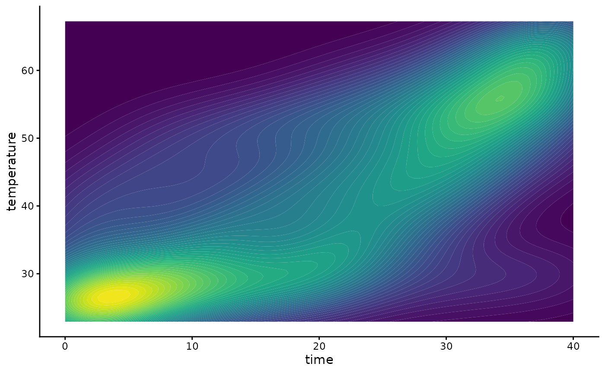
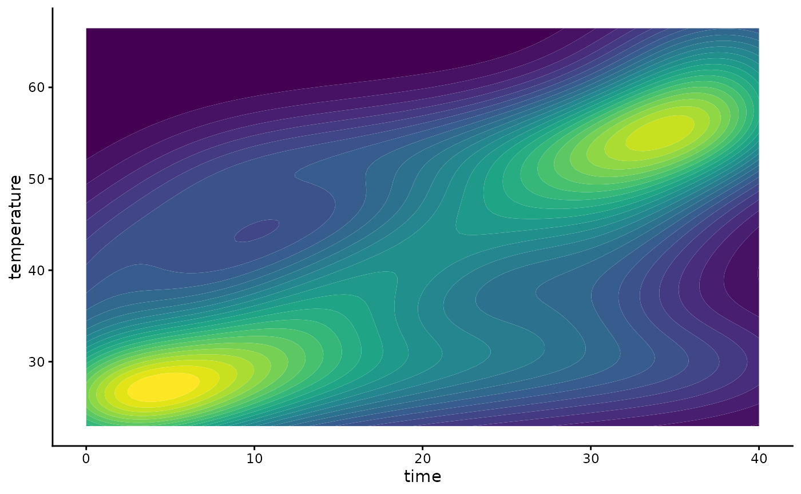
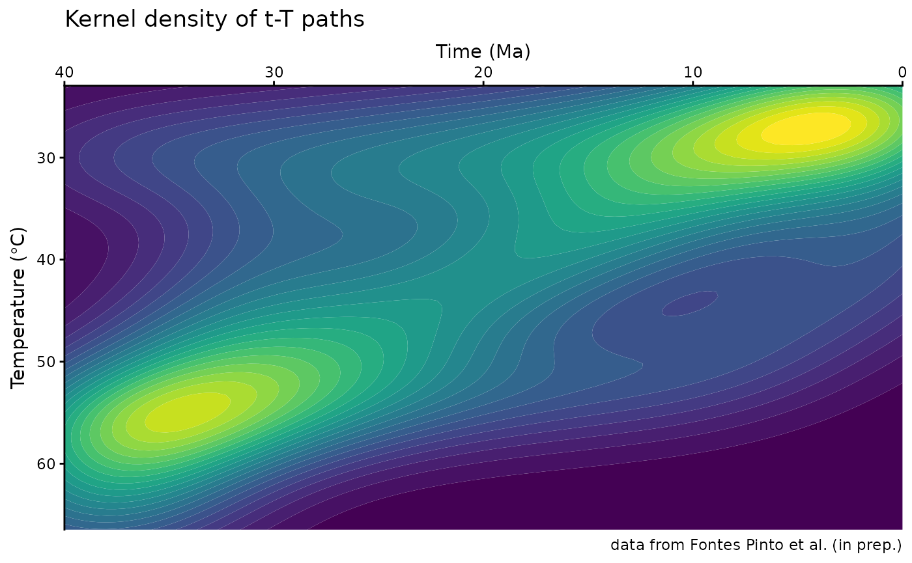

This document provides step-by-step instructions for producing density plots derived from HeFTy inverse thermal history models as seen in Padgett et al. (2025) and Johns-Buss et al. (2025).
Load Input Data
Open R and install and load the necessary packages. You can install the packages by running the following code:
install.packages("ggplot2")
remotes::install_github("tobiste/thermoclustr")Next, install the {thermoclustr} package by running the following code:
Define the path to your Hefty output (.txt file). For example:
path2myfile <- "inst/112-73_30_H1_50-inv.txt"Be aware that R uses forward-slashes (/) to separate folders.
Next, you import the .txt file into R by using the function
read_hefty():
Part II
Plot the path density
To plot the density of the paths, you simply use the function
plot_path_density():
# set `theme_classic()` as the default ggplot theme
theme_set(theme_classic())
plot1 <- plot_path_density_filled(tT_paths, show.legend = FALSE)
print(plot1)
This uses the package’s default values for smoothing and binning and
creates a ggplot type graphic.
You can customize the smoothing and density binning by changing the
parameters - bins - the number of filled contours.
GOF_rank- Selects only the n highest GOF ranked paths.densify- Should extra points be added along the individual paths to avoid that only the vertices of the path are evaluated?n- How many equally-spaced extra points should be added along between the vertices of the path (ifdensify=TRUE).samples- Size of a random subsample of all the paths to reduce the computation time.
plot2 <- plot_path_density_filled(tT_paths, bins = 25, GOF_rank = 5, densify = TRUE, n = 100, max_distance = 1, samples = 100, show.legend = FALSE)
print(plot2)
Finally, you can customize your ggplot, such as axes labels, change colors, and reverse the axes:
plot2 +
labs(
title = "Kernel density of t-T paths",
caption = "data from Fontes Pinto et al. (in prep.)",
x = "Time (Ma)",
y = bquote("Temperature (" * degree * "C)")
) +
coord_cartesian(expand = FALSE) +
scale_x_continuous(transform = "reverse", position = "top") +
scale_y_continuous(transform = "reverse") +
guides(fill = "none")